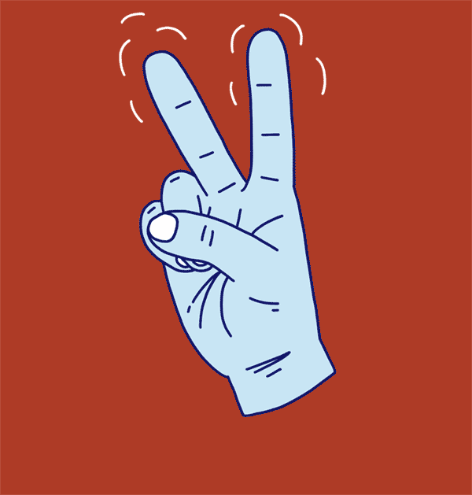

Indian Sign Language (ISL) is used by hearing-impaired individuals
to communicate. However, many people do not understand sign language,
creating a communication gap.
This project uses Artificial Intelligence to recognize hand gestures
in real-time and convert them into text and speech, helping bridge
this gap.
